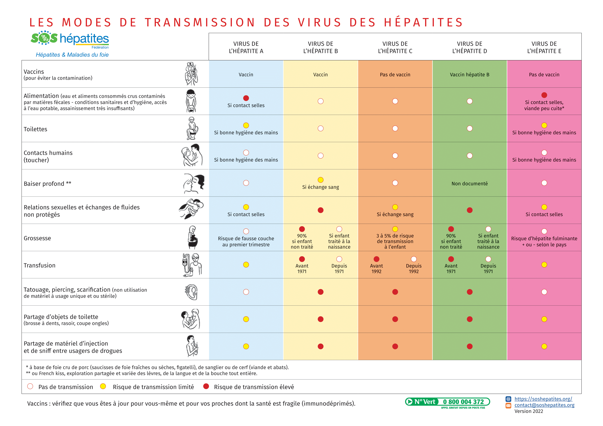

Modes de contamination

Télécharger le tableau des modes de transmission
Le virus de l'hépatite D n'infecte que les personnes déjà concernées par le virus de l'hépatite B. On peut être contaminé par les 2 virus (B et D) en même temps ou le virus de l'hépatite D surinfecte l'hépatite B chronique déjà présente.
On ne peut donc pas avoir l'hépatite D seule !